Hiểu AI Agent là gì, chọn đúng công cụ cho từng việc, và biết bước nào người phải duyệt.
Sau bài này, bạn giải thích được AI Agent bằng một câu và biết đội mình đang ở cấp nào.
Giống hỏi đồng nghiệp: "Viết lại email này cho lịch sự hơn giúp mình". Đồng nghiệp trả lời xong là xong. Bước tiếp theo vẫn do bạn quyết.
Giống giao việc cho nhân viên mới: "Làm giúp anh báo cáo đánh giá khách tuần này". Nhân viên tự mở file, đọc, viết, rồi mang bản nháp tới cho bạn duyệt.
AI Agent nhận một mục tiêu, tự chọn bước, dùng công cụ, xem kết quả, rồi làm tiếp tới khi xong.
1. Bạn mở Google Maps, chép 20 đánh giá.
2. Bạn dán vào ô chat, nhờ tóm tắt.
3. Bạn đọc, nhờ sửa lại phần chưa đúng.
4. Bạn chép kết quả sang file báo cáo.
Bạn làm 4 bước, AI làm 1 bước.
1. Claude mở file đánh giá trong Drive.
2. Claude đọc đủ 20 đánh giá, gom theo chủ đề.
3. Claude viết báo cáo, lưu thành file.
4. Claude báo bạn: "Bản nháp đây, anh duyệt giúp".
AI làm 4 bước, bạn duyệt 1 lần.
Sơ đồ "augmented LLM" trong bài Building effective agents của Anthropic, chụp ngày 20/11/2026. Khung số do The AI Growth vẽ thêm.
Agent chọn bước tiếp theo, dùng công cụ, đọc kết quả. Chưa đủ thì quay lại vòng. Đủ rồi thì báo bạn.
Gặp việc rủi ro hoặc bị kẹt, agent dừng lại và hỏi bạn.
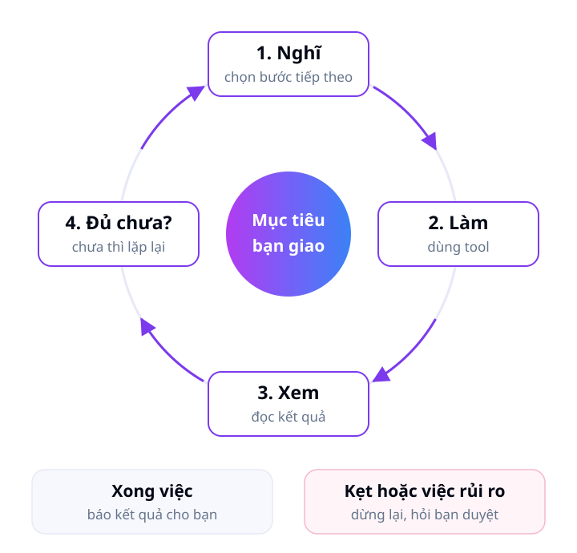
Hiểu sai việc, nên sai từ bước đầu.
Không mở được file thật, nên chỉ đoán.
Viết chung chung, sai giọng, sai giá của công ty.
Làm một lần rồi dừng, không tự sửa chỗ sai.
Tìm thông tin, viết bản nháp, chuyển một bài thành 3 kênh, tự soát lỗi chính tả. Đây là phần ngốn giờ nhất.
Duyệt dàn ý: chọn góc viết, đúng ý tiệm.
Duyệt trước khi đăng: giá, khuyến mãi, giọng thương hiệu.
Giá, phạm vi, và nút Gửi.
Sai một con số là mất tiền hoặc mất khách.
Hứa thừa một hạng mục là đội phải làm không công.
Đã gửi thì không lấy lại được.
Bạn dán dữ liệu, chép kết quả ra file. Bạn quyết mọi bước.
Claude đọc Drive qua connector, viết báo cáo, dừng chờ bạn duyệt.
Agent làm trên cả thư mục, chạy lâu, tự chạy code để tính.
Nhiều agent chia vai: một agent lấy số, một agent viết, một agent soát. Người duyệt cuối.
Giọng thương hiệu, bảng giá, quy trình nằm trong Project hoặc Skill.
Claude nối với Drive, Gmail qua connector.
Ví dụ sáng thứ Hai tự gom số quảng cáo tuần trước.
Sau bài này, bạn nhìn một việc và biết nên dùng Claude chat, workflow hay agent.
Chatbot: bạn quyết.
Workflow: kịch bản vẽ sẵn quyết.
AI Agent: AI tự quyết, trong giới hạn bạn đặt.
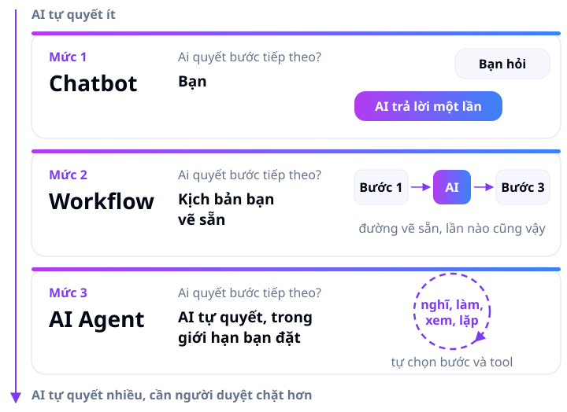
Claude trả lời từng câu. Bạn đọc, rồi quyết bước tiếp theo.
Hợp với: việc làm một lần, cần trao đổi qua lại. Ví dụ: viết lại một email cho lịch sự hơn, tính nhanh một bảng số.
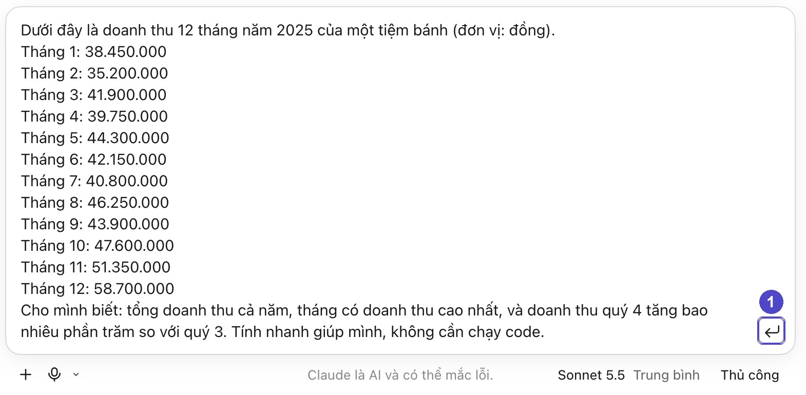
Ô chat của Claude: bạn gõ câu hỏi (1), bấm gửi (2), Claude trả lời ngay trong khung chat.
Không cần AI nghĩ ở mỗi bước. Chạy 1.000 lần vẫn ra giống nhau. n8n và Make là hai công cụ phổ biến.
Khách gửi ảnh thay vì điền form? Workflow vẫn chạy đúng bước cũ, hoặc báo lỗi rồi dừng.
Bạn giao mục tiêu trong một tin nhắn:
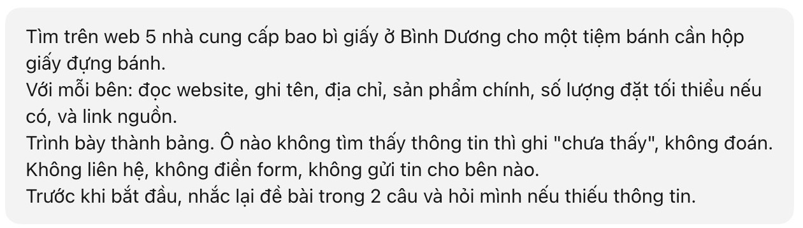
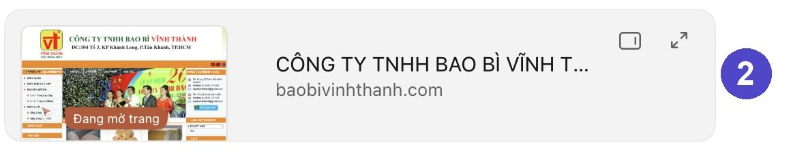
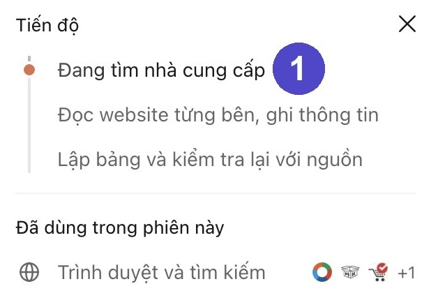
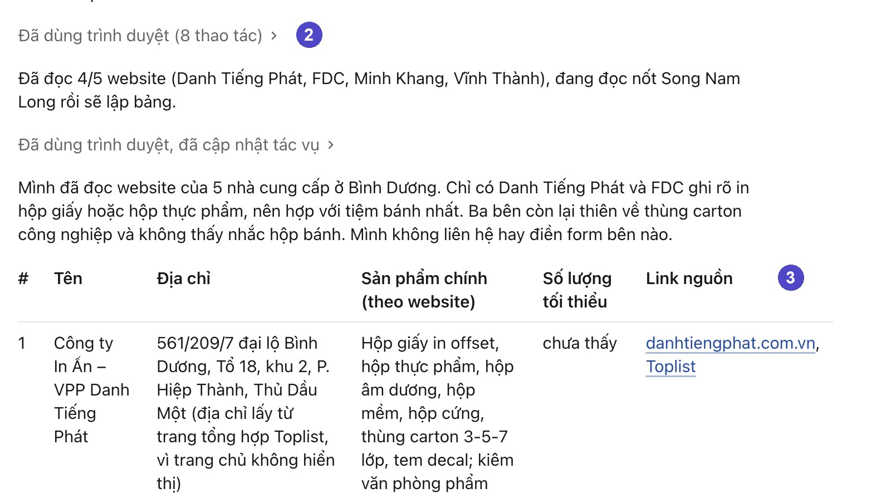
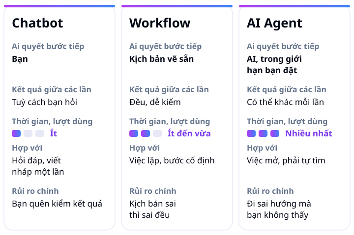
Ảnh chụp trang Anthropic "Claude Cowork and chat are now one Claude", ngày 20/11/2026. Khung số do The AI Growth vẽ thêm.
Claude trả lời ngay, như chat.
Claude tự lập kế hoạch, đọc file, tạo file báo cáo sửa được.
| Loại việc | Công cụ hợp | Bạn cần biết gì |
|---|---|---|
| Việc làm một lần | Claude chat | Biết hỏi rõ (Module 03) |
| Việc nhiều bước, đọc file | Claude giao việc | Biết giao mục tiêu và duyệt kết quả |
| Việc lặp cố định, nối nhiều app | n8n hoặc Make | Vẽ được các bước, chịu sửa khi có ca lạ |
| Việc trên nhiều file, chạy lâu | Claude Code | Quen làm việc với thư mục (Module 02) |
Sau bài này, bạn chỉ ra được trong một quy trình bước nào bắt buộc có người duyệt.
Email gửi 200 khách quen. Trong đó có một con số AI tự điền sai.
Lỗi nằm ở quy trình thiếu bước duyệt, không chỉ ở AI.
AI soạn, tổng hợp, định dạng rất nhanh. Phần quyết và chịu trách nhiệm vẫn thuộc người.
Ví dụ: AI soạn 30 email chào hàng trong 5 phút. Người quyết gửi cho ai và hứa gì.
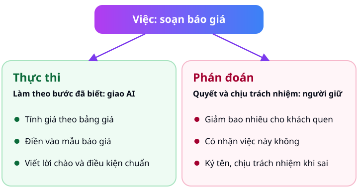
Năm chỗ AI hay sai nhất:
Trả lời 2 câu, mỗi việc rơi vào một trong 4 ô.
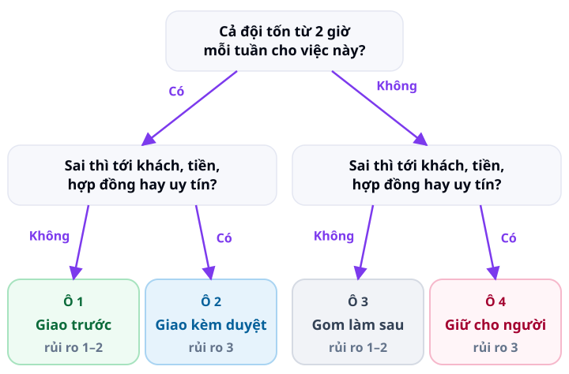
Việc nhỏ, rủi ro thấp: để sau, gom việc cùng loại thành một Skill.
Soạn mô tả 50 sản phẩm: tốn giờ, sai thì sửa dễ. AI làm, người đọc lại.
Chốt giá, hợp đồng: người làm, AI chỉ gợi ý khi được hỏi.
Trả lời khiếu nại: AI soạn, người duyệt từng lần trước khi gửi.
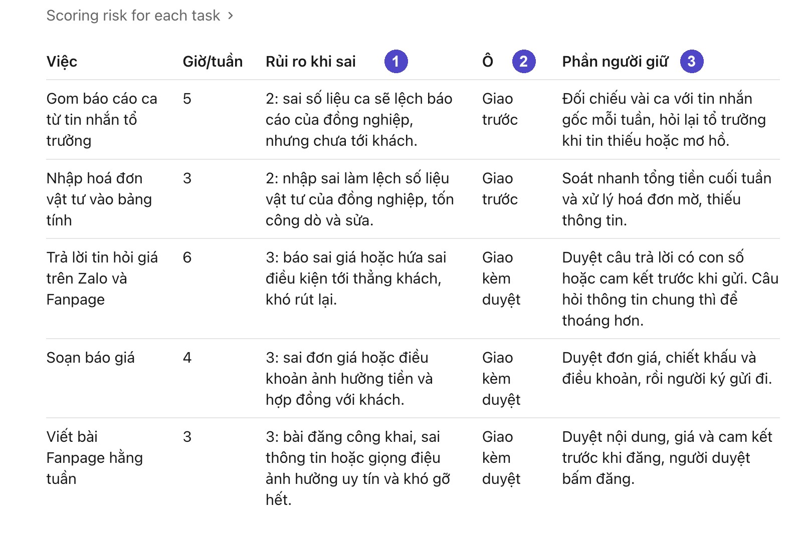
Gửi khách, đối tác, cơ quan.
Giá, hợp đồng, hoá đơn, hồ sơ.
Bài đăng, quảng cáo, website.
Xoá dữ liệu, tiêu tiền, gửi hàng loạt.
| Bước | Câu trả lời "có" | Ai làm |
|---|---|---|
| 1–6 · Đọc, tìm hiểu, dựng khung, điền, soát | Không có. Kết quả còn nằm trong công ty. | AI Agent |
| 7 · Duyệt giá và phạm vi | Câu 2: có giá trị tài chính | Trưởng nhóm |
| 8 · Gửi cho khách | Câu 1: ra ngoài công ty. Câu 4: gửi rồi khó sửa | Người gửi |
Việc rủi ro thấp đã chạy đúng nhiều lần.
Mở link, mở file gốc, so từng con số.
Pháp lý, thuế, kỹ thuật: người có nghề ký.
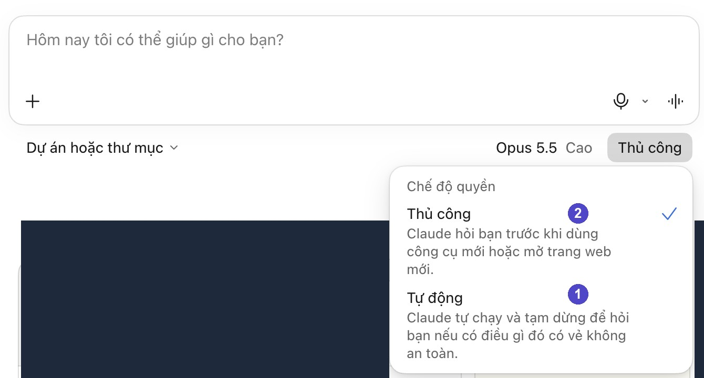
Bạn nộp bảng 10 việc lặp đã chấm Giờ × Rủi ro, có cột "bước bắt buộc người duyệt". Bảng này dùng lại ở Module 02, 03 và 04.
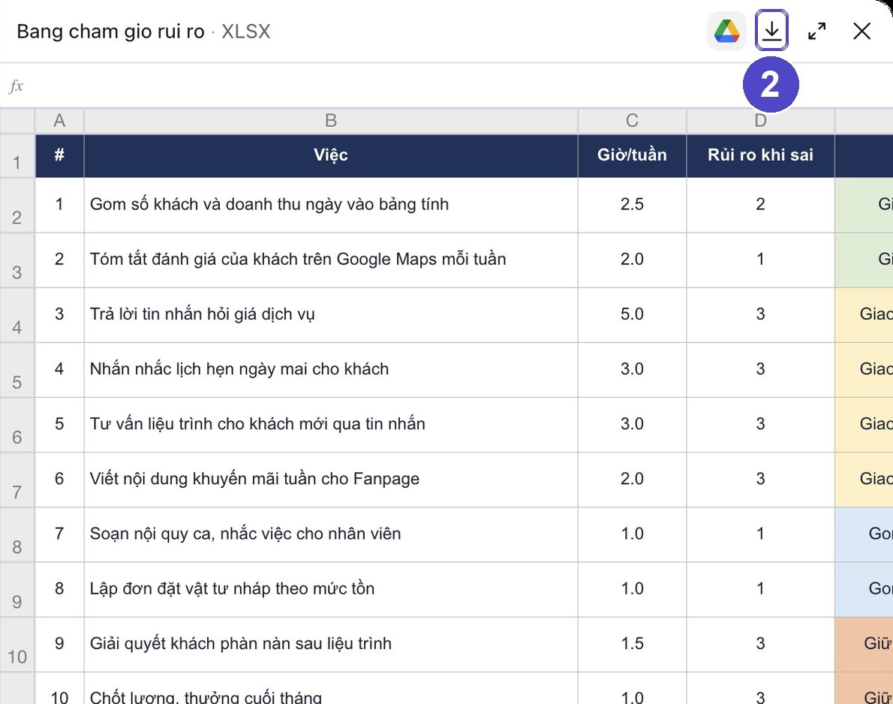
Ảnh chụp thật: Claude tạo file Excel bảng chấm từ danh sách việc bạn dán vào. Bấm (2) để tải về.
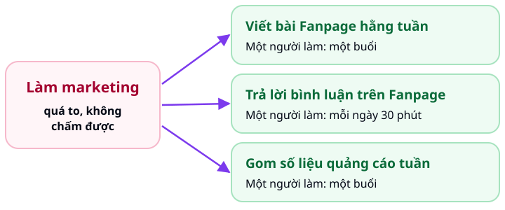
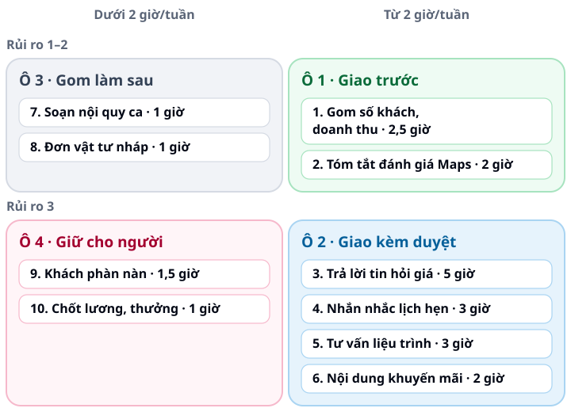
Chọn đúng AI, model và gói cho việc của bạn: Claude, ChatGPT, Gemini hay Grok, gói 20 USD hay API.